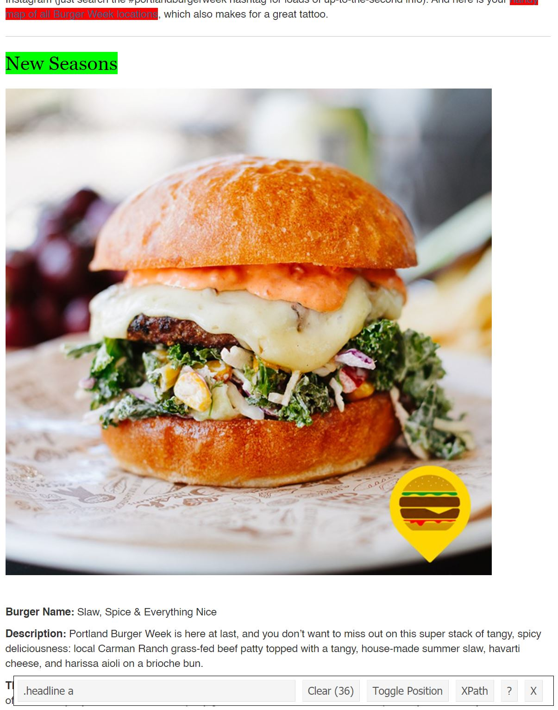

I take the Portland food weeks very seriously. My partner and I make a list of our must-trys and then I make out plan of attack. We usually hit up 2-3 places a night until we’ve exhausted all the places that we wanted to try. Burger Week is coming up in a couple weeks and I wanted to streamline things a bit: I wanted a spreadsheet of all of the burgers. I knew that web scraping in R was a thing but honestly I had always been a bit intimidated. I had some free time on my hands and figured: now is the time to learn. So I googled a few tutorials and dove straight in. It wound up being so much easier than I thought it would be. Let’s learn together.
The tutorial I wound up reading in most detail is this one. The reason I liked this tutorial is that it turned me on to this nifty little tool to kinda cheat a little - it’s a Chrome extension called SelectorGadget that makes finding the relevant CSS elements easy peasy.
Step 1: install the SelectorGadget extension here.
Step 2: In R, install {rvest}.
install.packages("rvest")Step 3: Have R read in your website of interest - mine is the Portland 2021 Burger Week list.
library(rvest)
library(tidyverse)
url <- 'https://www.portlandmercury.com/sponsored/burgerweek2021'
webpage <- read_html(url)Step 4: Now go to your website and activate SelectorGadget. Click on the element you want to scrape. For me, I did the restaurant names first. Scroll through the whole page and make sure the only things highlighted green/yellow are things you want. If there are any other elements highlighted, click on them and they will turn red/be excluded.

The SelectorGadget tells me that the CSS element that I want is .headline a. Back in R, lets use that to scrape the restaurant names. Use html_nodes() to scrape the element and html_text2() to read the text.
restaurant <- html_nodes(webpage,'.headline a') %>% html_text2()
restaurant## [1] "New Seasons" "Bar Bar"
## [3] "Boke Bowl" "Bread & Ink Cafe"
## [5] "BrunchBox" "Church"
## [7] "Danwei Canting" "Farmer and the Beast"
## [9] "Fills" "Fuller's Burger Shack"
## [11] "Haymaker" "Holler"
## [13] "Holy Goat" "HOME, A BAR"
## [15] "Hop Capital Brewing PDX" "Landmark Saloon"
## [17] "Laurelwood Public House & Brewery" "Local 66 Bar and Grill"
## [19] "Loyal Legion" "Mad Greek Deli"
## [21] "Mighty Moe's Tanker" "Moreland Ale House"
## [23] "Next Level Burger" "Nick's Famous Coney Island"
## [25] "Paymaster Lounge" "Piccone's Corner"
## [27] "Ponderosa Lounge & Grill" "Portland Burger"
## [29] "Rocky's Sports And Spirits" "Salvador Molly's"
## [31] "show bar" "Steakadelphia"
## [33] "Sunny's Diner" "West Coast Grocery Company"
## [35] "Ya Hala" "Yur's Bar and Grill"Step 5: Do the same for the rest of the elements you want and you’re good to go! Here’s my code in entirety:
library(tidyverse)
library(rvest)
url <- 'https://www.portlandmercury.com/sponsored/burgerweek2021'
webpage <- read_html(url)
restaurant <- html_nodes(webpage,'.headline a') %>% html_text2()
burger_name <- html_nodes(webpage, '.blog-body p:nth-child(1)') %>% html_text2()
description <- html_nodes(webpage, '.blog-body p:nth-child(2)') %>% html_text2()
address_hours <- html_nodes(webpage, 'p:nth-child(5) , p:nth-child(4)') %>% html_text2()
# ugh sometimes address is 4th...sometimes it's 5th...must filter.
address_hours <- as.tibble(address_hours) %>% filter(grepl("Address/Hours of Availability",value)) %>% pull()
burger_week <- tibble(restaurant = restaurant,
burger_name = burger_name,
description = description,
address_hours = address_hours)
# cleaning
burger_week <- burger_week %>%
separate(burger_name, into = c("trash", "burger_name"), sep = ":", extra = "merge") %>%
separate(description, into = c("trash", "description"), sep = ":", extra = "merge") %>%
separate(address_hours, into = c("trash", "address_hours"), sep = ":", extra = "merge") %>%
select(restaurant, burger_name, description, address_hours)
write_csv(x = burger_week, path = "burger_week_2021.csv")You can find the resultant .csv file on my github.
Happy scraping!